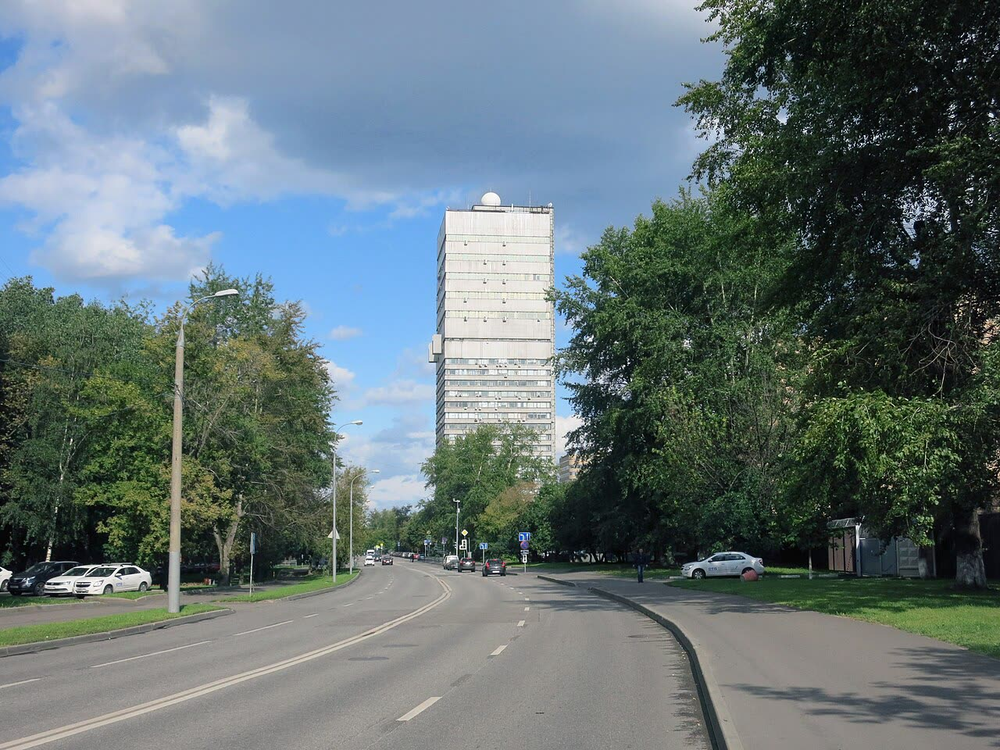

Hacker: 394-450 mila russi morti in guerra nei registri Rosstat (non verificato)
Cifre non verificate, ma in linea con le altre stime indipendenti: se fossero vere, il costo umano chiede un accordo, e l'Europa deve portare ad Abu Dhabi i propri interessi.
Redazione Contrappunto · aggiornato il 08.11.2026


Rosstat è l'istituto di statistica del governo russo. Dal settembre 2022 la Russia non pubblica più le sue perdite militari in Ucraina e dal 2024 Rosstat ha smesso di diffondere i dati annuali sulle cause di morte, quindi una stima indipendente è difficile. Il 1° novembre il Moscow Times ha scritto che due gruppi di hacker, i Cyber Partisans bielorussi e Silent Crow, dicevano di aver rubato 23 terabyte di dati a Rosstat. Il 7 e 8 novembre i due gruppi hanno detto che i registri di morte contengono da 394 mila a 450 mila persone morte per la guerra tra febbraio 2022 e agosto 2026. Sono affermazioni dei gruppi: nessuna testata che abbiamo letto ha verificato l'autenticità dei dati, e nemmeno noi possiamo farlo.
Vedi di più: 3 parole spiegate, cosa si racconta
Cosa si raccontaEuronews (centro) parla di «oltre 390 mila» morti secondo le stime dei due gruppi, e ricorda che Meduza e Mediazona stanno controllando i dati. Il Kyiv Independent (ucraino) titola «fino a 450 mila» secondo gli hacker e scrive che non può verificarli. Il Moscow Times (testata russa indipendente in esilio, dichiarata «indesiderabile» dalla procura russa) titola invece «I dati ufficiali mostrano 450 mila russi uccisi», pur ammettendo di non aver verificato il materiale per intero. Rosstat conferma l'attacco ai siti, ma nega che siano state rubate banche dati. [Euronews] [The Kyiv Independent] [The Moscow Times] [The Moscow Times]
- Cyber Partisans e Silent Crow
- Due gruppi di hacker. I Cyber Partisans sono bielorussi e si oppongono al regime di Lukashenko (Kyiv Independent); Silent Crow ha rivendicato altri attacchi a enti russi (Moscow Times). La Russia li ha classificati come organizzazioni «estremiste» (Moscow Times).
- Mediazona e Meduza
- Redazioni russe indipendenti, con sede fuori dalla Russia. Mediazona, con la BBC in lingua russa, conta i soldati morti identificati per nome: 285.881 al 6 novembre, elenco che dichiarano incompleto (Kyiv Independent).
- Abu Dhabi
- Sede dei prossimi colloqui di pace sull'Ucraina, a cui la Russia manda anche il viceministro degli Esteri Sergei Ryabkov (Kyiv Independent).
- Cyber Partisans e Silent Crow dicono di aver rubato a Rosstat i registri di morte: 393.881 russi morti per la guerra (Cyber Partisans) o fino a 450.100 (Silent Crow).
- Nessuna testata ha verificato i dati; Rosstat conferma l'attacco ai siti e nega la fuga di banche dati.
Euronews, Kyiv Independent e Moscow Times partono dalla stessa fonte: due gruppi di hacker, senza prove verificate. Il Moscow Times titola «dati ufficiali», ma ha incrociato solo un campione casuale di 50 nomi dell'elenco Mediazona-BBC con i dati di Silent Crow, senza poter verificare tutto; Rosstat nega la fuga e del Cremlino non abbiamo trovato una reazione. Regge a metà: la cifra è in linea con altre stime, la prova manca. Il ministro francese Barrot dice che gli europei saranno ad Abu Dhabi. Quindi? Lì devono chiedere la fine della guerra, costi dell'energia più bassi e niente altri miliardi senza una via d'uscita. [1] [2] [3] [4]
La verifica punto per punto4 passaggi, 4 fonti
Qui sotto ogni cosa scritta sopra, una per una, con le fonti. Confermato: lo dice un documento originale o più fonti lette. Plausibile: lo riportano fonti serie, ma non abbiamo letto l'originale. Discordante: le fonti danno numeri diversi, e diciamo quali. Ipotesi e Opinione sono il nostro ragionamento, separato dai fatti.
Chi lo dice e come
Secondo il Moscow Times, il 1° novembre Rosstat ha detto che i suoi siti avevano subito un attacco coordinato tra il 29 ottobre e il 1° novembre, e ha negato che siano state rubate banche dati. I Cyber Partisans e Silent Crow dicono di aver preso 23 terabyte. Il 7 novembre, per il Kyiv Independent, hanno indicato 394 mila-450 mila morti legati alla guerra nel database «Demography» di Rosstat, con certificati registrati tra febbraio 2022 e agosto 2026. Per Euronews i Cyber Partisans contano 393.881 morti con causa «operazioni militari»; Silent Crow, 450.100, includendo morti non in combattimento e senza causa precisata. Nessuna testata ha verificato i dati: il Moscow Times ha incrociato un campione casuale di 50 nomi dell'elenco Mediazona-BBC con i dati di Silent Crow, senza poter verificare tutto. Per il suo analista Janis Kluge, «This is the most significant leak of data when it comes to Russian casualties». Sempre per il Kyiv Independent, il ministro degli Esteri francese Jean-Noël Barrot ha detto: «The Europeans will be well represented, and France will be in Abu Dhabi».
Quanti sono
Le cifre non coincidono perché contano cose diverse. I Cyber Partisans: 393.881 (morti con causa operazioni militari, per Euronews); Silent Crow: 450.100 (anche non combattenti, attentati, senza causa precisata). Altre stime: Mediazona e BBC russa, 285.881 identificati per nome al 6 novembre (elenco incompleto); Meduza e Mediazona, circa 350 mila a fine 2025 (Euronews); il ministero della Difesa britannico, oltre mezzo milione a inizio settembre (Moscow Times). Per Euronews i dati Rosstat non includono i dispersi.
Chi ha interesse
Le cifre alte possono servire a chi vuole mostrare che la guerra costa troppo alla Russia: gli hacker, che si oppongono ai regimi di Minsk e Mosca, e le testate che le rilanciano prima della verifica.
Ragionamento: Gli hacker sono dichiarati estremisti dalla Russia; il Moscow Times è bollato «indesiderabile» a Mosca; Rosstat ha interesse a negare. Contro: Euronews, che non è parte, scrive che le cifre sono in linea con le stime indipendenti, e il ministero della Difesa britannico (Moscow Times) ne dà una più alta. È un'ipotesi sul movente, non un fatto. Fiducia media.
Il nostro punto
Non prendiamo per buona una cifra senza prove, ma è in linea con altre stime: se fosse vera, il costo umano della guerra rende più urgente un accordo. L'Europa ad Abu Dhabi ci sarà, a dire di Barrot: la domanda è cosa chiede. Per i nostri interessi, la fine della guerra, prezzi dell'energia più bassi e nessun altro miliardo senza una via d'uscita.
Fonti4, tutte con il link
- Rosstat hack: data suggests over 390,000 Russian deaths in Ukraine war (8 novembre 2026) (Euronews) · consultata il 08.11.2026
- Hackers claim leaked Russian data reveals up to 450,000 war-related deaths in Ukraine (7 novembre 2026) (The Kyiv Independent) · consultata il 08.11.2026
- Official Data Shows 450,000 Russians Killed in War, Death Rate Accelerating – Rosstat Leaks (8 novembre 2026) (The Moscow Times) · consultata il 08.11.2026
- Cyberattack Hits Rosstat as Hackers Claim Huge Data Theft (1 novembre 2026) (The Moscow Times) · consultata il 08.11.2026
Testo preparato con strumenti di intelligenza artificiale e pubblicato senza revisione umana. Come lavoriamo